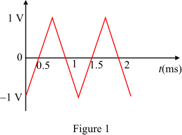
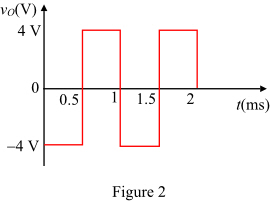

Calculate the output voltage of the differentiator in the interval .

Calculate the output voltage of the differentiator in the interval .
Refer to differentiator circuit in Figure 2.27 (a) in the textbook.
The triangular wave of peak amplitude at 1 kHz is applied to the input. The sketch of triangular wave is shown in Figure 1.

Calculate the output voltage of the differentiator in the interval .
Calculate the output voltage of the differentiator in the interval .
The sketch of the output voltage is shown in Figure 2.

Calculate the frequency of the output waveform.
The frequency of the output is same as the input.
Therefore, the frequency,  of the output is .
of the output is .
Calculate the peak amplitude of the output voltage wave form.
Therefore, the peak amplitude of the output voltage, is  .
.
Calculate the average value of the of the output waveform.
Therefore, the average value of the output voltage, is  .
.
Calculate the current through the capacitor.
Substitute  for and
for and  for
for  in the equation.
in the equation.
Therefore, the value of resistance,  is .
is .